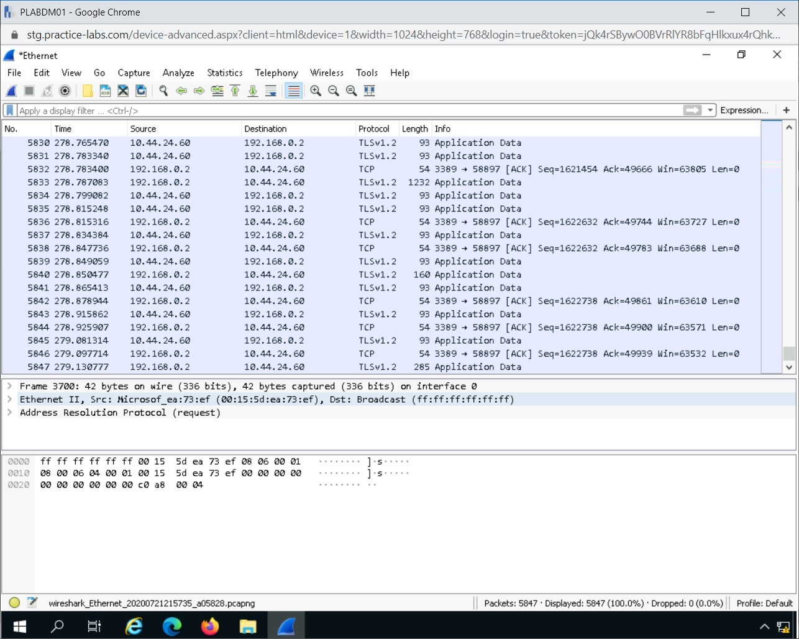
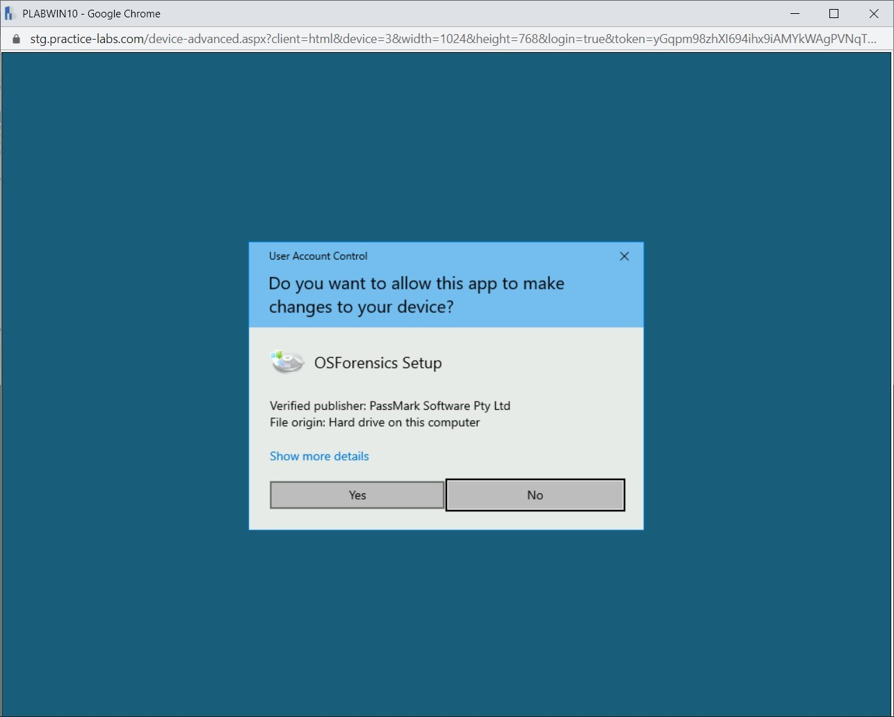
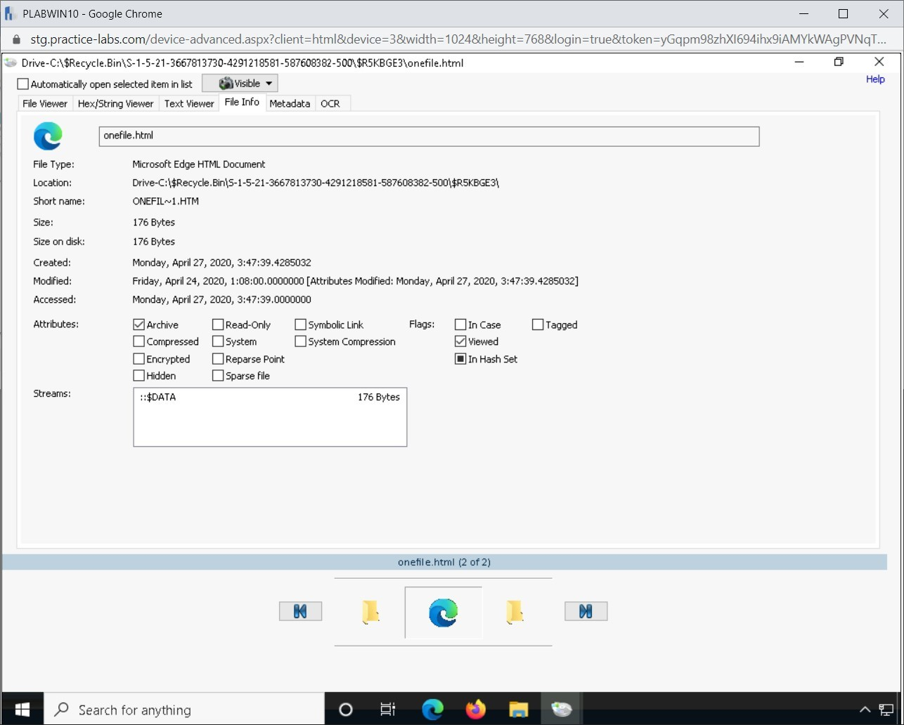

Introduction
9beca326-b493-4b0e-b3dc-d7dfb77df3c9
Welcome to the Digital Forensics Techniques Practice Lab. In this module, you will be provided with the instructions and devices needed to develop your hands-on skills.
dc640c20-9434-45ea-b7c2-6d4d6a196bfc
Learning Outcomes
In this module, you will complete the following exercises:
- Exercise 1 - Use Tcpdump
- Exercise 2 - Capture Packets with Wireshark
- Exercise 3 - Use OSForensics
After completing this lab, you will be able to:
- Use Tcpdump
- Capture Traffic Information
- Analyze Captured Information
- Display Capture Information with Wireshark
- View Packet Capture Logs
- Collect User SID
- View Deleted Files
Exam Objectives
The following exam objectives are covered in this lab:
- 4.4 Given a scenario, utilize basic digital forensics techniques
Note: Our main
focus is to cover the practical, hands-on aspects of the exam
objectives. We recommend referring to course material or a search engine
to research theoretical topics in more detail.
Lab Duration
It will take approximately 1 hour to complete this lab.
7ca097e1-3b9c-4203-a9a2-3215787353ca
Help and Support
For more information on using Practice Labs, please see our Help and Support page. You can also raise a technical support ticket from this page.
Click Next to view the Lab topology used in this module.
d2c53300-f951-45a9-9aa4-3d4ecae69e11
Lab Topology
During your session, you will have access to the following lab configuration.

Depending on the exercises, you may or may not use all
of the devices, but they are shown here in the layout to get an overall
understanding of the topology of the lab.
- PLABDC01 - (Windows Server 2019 - Domain Server)
- PLABDM01 - (Windows Server 2019 - Domain Member)
- PLABKALI01 - (Kali Linux 2019 - Linux Kali)
- PLABWIN10 - (Windows 10 - Domain Member Workstation)
- PLABCENTOS - (Centos 8 Linux - Stand-alone Linux Server)
- PLABALIENVAULT - (Alien Vault Linux Security Management Platform)
Click Next to proceed to the first exercise.
<
Home |
README >
CompTIA Cybersecurity Analyst (CySA+) Practice Labs
Exercise 1 - Use Tcpdump
Tcpdump is a tool that can be used for packet
analysis. Using this tool, you can capture packets that traverse through
a network, and after capturing the packets, you can investigate and
analyze them. Tcpdump can be used not only for packet analysis but also
for troubleshooting various network issues.
In this exercise, you will learn to use tcpdump.
Learning Outcomes
After completing this exercise, you will be able to:
Your Devices
You will be using the following devices in this lab. Please power these on now.
- PLABDC01 - (Windows Server 2019 - Domain Server)
- PLABKALI01 - (Kali Linux 2019 - Linux Kali)
Task 1 - Use Tcpdump
There are a variety of tasks that can be performed using tcpdump.
You can capture packets through one network adapter or multiple network
adapters (if they are installed on the system). In this task, you will
use tcpdump, which is available on Kali Linux.
To use tcpdump, perform the following steps:
Step 1
Ensure that you have powered on the required devices. Connect to PLABKALI01.
Figure 1.1 Screenshot of PLABKALI01: Showing the PLABKALI01 desktop.
Step 2
In the left-hand pane, click the Terminal icon.
Figure 1.2 Screenshot of PLABKALI01: Clicking on the Terminal icon in the application bar.
Step 3
The Terminal window is displayed. Using the tcpdump command, you can capture the packets using a specific interface. For example, if the system has eth0 as the interface, you can use it for capturing packets.
Type the following command:
tcpdump -i eth0
Press Enter.
Note: The -i parameter is used for specifying the interface.
Figure 1.3 Screenshot of PLABKALI01: Entering the tcpdump command.
Step 4
This command continues to run unless you break it by pressing the Ctrl + C keys.
Figure 1.4 Screenshot of PLABKALI01: Showing the output of the tcpdump command.
Step 5
Clear the screen by entering the following command:
clear
Instead of running the command continuously, you can
run the command a specific number of times. To do this, type the
following command:
tcpdump -c 10 -i eth0
Press Enter.
Note: The -c parameter is used for specifying the packet count.
Figure 1.5 Screenshot of PLABKALI01: Entering the tcpdump command.
Step 6
The command captures the packets for the specified number of times.
Figure 1.6 Screenshot of PLABKALI01: Showing the output of the tcpdump command.
Step 7
Clear the screen by entering the following command:
clear
You can also list the available interfaces in your system with tcpdump. To do this, type the following command:
tcpdump -D
Press Enter.
Figure 1.7 Screenshot of PLABKALI01: Entering the tcpdump command.
Step 8
The list of available interfaces is displayed.
Figure 1.8 Screenshot of PLABKALI01: Showing the output of the tcpdump command.
Step 9
Clear the screen by entering the following command:
clear
You can save the output of the tcpdump command in a file with the .pcap extension. To do this, type the following command:
tcpdump -w plab.pcap -i eth0
Press Enter.
Note: Let the command run for a few minutes.
Figure 1.9 Screenshot of PLABKALI01: Entering the tcpdump command.
Step 10
This command continues to run unless you break it by pressing the Ctrl + C keys.
Figure 1.10 Screenshot of PLABKALI01: Showing the output of the tcpdump command.
Step 11
After you have sent the output to a file, you can read it with the -r parameter. To do this, type the following command:
tcpdump -r plab.pcap
Press Enter.
Figure 1.11 Screenshot of PLABKALI01: Entering the tcpdump command.
Step 12
Notice that the output from the file is displayed on the screen.
Figure 1.12 Screenshot of PLABKALI01: Showing the output of the tcpdump command.
Step 13
Clear the screen by entering the following command:
clear
Rather than using a specific interface, you can
capture packets using all available interfaces. To do this, type the
following command:
tcpdump -i any
Press Enter.
Note: Let the command run for a few minutes.
Figure 1.13 Screenshot of PLABKALI01: Entering the tcpdump command.
Step 14
This command continues to run unless you break it by pressing the Ctrl + c keys.
 Figure 1.14 Screenshot of PLABKALI01: Showing the output of the tcpdump command.
Figure 1.14 Screenshot of PLABKALI01: Showing the output of the tcpdump command.
Step 15
Clear the screen by entering the following command:
clear
By default, tcpdump captures all types of packets,
but you can limit it to capture only a specific type of protocol
packets. To do this, type the following command:
tcpdump -i any icmp
Press Enter.
Note: Let the command run for a few minutes.
Figure 1.15 Screenshot of PLABKALI01: Entering the tcpdump command.
Step 16
Open a new terminal window and type the following command:
ping 192.168.0.1
Press Enter
Figure 1.16 Screenshot of PLABKALI01: Ping another system from a different terminal.
Step 17
After a few pings, break the command by pressing the Ctrl + c keys. Then, close the terminal window.
Figure 1.17 Screenshot of PLABKALI01: Showing the output of the ping command.
Step 18
Notice that these commands are captured by tcpdump.
Figure 1.18 Screenshot of PLABKALI01: Showing the output of the tcpdump command.
5552932f-e263-4095-bb6a-fa7be9031d50
Close the terminal window.
<
Home |
README >
CompTIA Cybersecurity Analyst (CySA+) Practice Labs
Exercise 2 - Capture Packets with Wireshark
Wireshark can be useful when conducting
passive reconnaissance as it does not interact with devices directly,
but samples traffic moving on the network. This can be done by capturing
traffic and packet logs to then review them.
In this task, we will capture packets using Wireshark.
Learning Outcomes
After completing this exercise, you will be able to:
- Capture Traffic Information
- Analyze Captured Information
- Display Capture Information with Wireshark
- View Packet Capture Logs
Your Devices
You will be using the following devices in this lab. Please power these on now.
- PLABDC01 - (Windows Server 2019 - Domain Server)
- PLABDM01 - (Windows Server 2019 - Domain Member)
- PLABKALI01 - (Kali Linux 2019 - Linux Kali)
- PLABWIN10 - (Windows 10 - Domain Member Workstation)
- PLABCENTOS - (Centos 8 Linux - Stand-alone Linux Server)
Task 1 - Capture Traffic Information
Wireshark is a free, open-source, passive
reconnaissance tool that can be used to analyze network traffic. This
type of tool is, in general, referred to as a network analyzer, network
protocol analyzer, or a packet sniffer. The captured traffic can be
saved for analysis later. The file format that it is saved as is a
.pcapng file format.
Initially, you will be using Wireshark to view
traffic information from devices on the network. When you select an
interface, such as Ethernet or eth0 in Wireshark, it activates it to capture the traffic instantly.
In this task, you will learn to capture traffic information. To do this, perform the following steps:
Step 1
Ensure that all devices have been powered on.
Connect to PLABDM01. The Server Manager window is displayed. Close it to proceed further.
Figure 2.1 Screenshot of PLABDM01: Closing the Server Manager window.
Step 2
Click Start and type the following:
Wireshark
From the search results, right-click Wireshark and select Run as administrator.
Note: When prompted with the User Access Control dialog box, click Yes.
Figure 2.2 Screenshot of PLABDM01: Selecting Wireshark to run.
Step 3
When the program has loaded, under Capture, double-click Ethernet.
Figure 2.3 Screenshot of PLABDM01: Selecting the Ethernet adapter.
Step 4
The packet capturing process starts. Leave the
capture running for a minute to collect information flowing across the
networking devices.
Figure 2.4 Screenshot of PLABDM01: Showing the captured packets.
Step 5
Connect to PLABWIN10 from the toolbar and click Reboot. Alternatively, you can log into that device and restart it from there.
Alert: Do not use the Reset option to restart Windows.
Step 6
Connect to PLABDM01 and observe the packet capture window while PLABWIN10 boots. You will see ARP data as well as TCP traffic, but you want to look for the ARP requests when PLABWIN10 starts. Bear in mind the IP for this device is listed in the diagram above, and you will need to look for that address.
Once the device has rebooted successfully, you can end the packet capture process in Wireshark by pressing the Red Square button at the top left-hand side.
Figure 2.5 Screenshot of PLABDM01: Clicking the red square to stop packet capturing.
Step 7
Once the packet capture has ended, you should see the Red Square has turned to Grey.
Figure 2.6 Screenshot of PLABDM01: Showing Wireshark capture in a stopped state.
Step 8
Either you can scroll back up and manually locate the arp packets, or you can filter them. Let’s filter them for this task.
In the Apply a display filter text box, type the following:
arp
Press Enter. Notice that several arp packets have been captured. One from PLABWIN10 is highlighted.
Figure 2.7 Screenshot of PLABDM01: Entering the command to filter the packets.
Step 9
Click on x in the red square to remove the filter.
Figure 2.8 Screenshot of PLABDM01: Showing the filtered packets.
Task 2 - Analyze Captured Information
You can list information according to different tabs
and then move it into basic filtering techniques. Knowledge of protocols
is essential to understanding all the information in Wireshark. In this
task, you will explore the details of traffic flows and how to
understand them using the main interface.
Step 1
Connect to PLABDM01. Now let’s explore some of the interface and options you have in Wireshark.
First, notice the display options:
- No - Packet Number which is counted for each packet recorded
- Time - Time of the packet recording
- Source - Source IP address
- Destination - Destination IP address
- Protocol - Which type of protocol has been used
- Length - Length of the Packet
- Info - Any extra information which could be useful
First, click on the Protocol column header to
list the information by type. That will list the ARP protocols first,
and you can then discover devices making requests for information by
checking the Info tab.
Figure 2.9 Screenshot of PLABDM01: Clicking the Protocol column header.
Step 2
Notice that the captured packets are now sorted based on their protocol names.
Figure 2.10 Screenshot of PLABDM01: Showing the sorted packets based on their protocols.
Step 3
You need to scroll through the details to find the
results of the ARP sessions. From this method, all the communicating
devices that are calling out to check each other’s IP addresses, you
learn that all the addresses listed for all switched on devices that are
connected to the same Ethernet adapter. You can see calls for 192.168.02, which is the PLABDM01 server asking for information about who has 192.168.0.1, which is the PLABDC01 server.
You also see devices establishing their addresses. For example, the device 192.168.0.2, which is the PLABDM01 system, confirms its address location at 00:15:5d:ea:73:f2.
Figure 2.11 Screenshot of PLABDM01: Displaying the ARP information in Wireshark.
Step 4
Scroll a little further down and search for the device you rebooted.
Figure 2.12 Screenshot of PLABDM01: Displaying the ARP protocol information in Wireshark.
Step 5
Its frame can be seen making a Gratuitous Request via a broadcast, effectively setting its source and destination address information against its IP.
If another machine did own 192.168.0.4, PLABWIN10 would detect a duplicate IP address and prompt the user to change the configuration.
Wireshark decodes the OUI, and you can expand the MAC fields to decode the multicast/broadcast bit and a locally administered bit.
The ARP headers (layer 2.5 or 3-ish) contain similar
information, plus the sender and target IP addresses. ARP is a very
simple protocol. IP and higher-level packets often contain many more
headers.
Also, note the bottom frame. This contains the raw
data in a hexadecimal format (the computers receive it as a series of 1s
and 0s. When you select information in pane 2, the relevant hex digits
are selected here (and vice versa).
Figure 2.13 Screenshot of PLABDM01: Showing the packet information in the hexadecimal form.
Step 6
Let’s explore the capture a little further. Scroll
throughout the capture and view the contents of the protocols collected
overall.
Notice the color coding which Wireshark uses to clarify the different traffic types.
You’ll probably see packets highlighted in different colors, such as blue and purple. Wireshark uses colors to identify the different types of traffic.
Type the following in the filter bar and press Enter:
dns
You will see queries going out to PRACTICELABS.COM, which is the domain.
Note: If you are
unable to get any result when searching for dns, you can try to search
for the keyword - dnsserver. This task uses the keyword - dns.
Figure 2.14 Screenshot of PLABDM01: Displaying the DNS information in Wireshark.
Step 7
Click on x in the red square to remove the filter.
Figure 2.15 Screenshot of PLABDM01: Clearing the Filter Wireshark DNS information.
Step 8
Moving down the list, you can view plenty of TCP traffic from all the devices that are using that protocol.
There is a lot of information on TCP that is flowing, which can be overwhelming to inspect.
Figure 2.16 Screenshot of PLABDM01: Displaying the Wireshark TCP traffic.
Step 9
Type the following in the filter bar:
ip.src == 192.168.0.1
Press Enter.
Figure 2.17 Screenshot of PLABDM01: Displaying the filtering for an IP.
Step 10
You can view all the traffic which has flowed from PLABDC01 since the recording began.
Figure 2.18 Screenshot of PLABDM01: Showing the filtered packets for a specific IP address.
Step 11
Click on x in the red square to remove the filter.
Figure 2.19 Screenshot of PLABDM01: Clearing the Filter Wireshark DNS information.
Task 3 - Display Capture Information with Wireshark
You will now explore different methods of output to
view the data in more appealing and instantly rewarding formats. By
viewing the key information more rapidly, you can discern if a more
detailed investigation is required or not.
Step 1
Connect to PLABDM01. Making sure the filter
has been cleared of contents; you are back at the original capture
information. You will now analyze the data in a more summary output.
Click the Statistics menu option and then select Resolved Addresses.
Figure
2.20 Screenshot of PLABDM01: Resolving IP Addresses by selecting the
Statistics tab and then selecting Resolved Addresses.
Step 2
Hosts that have their addresses resolved from an IP to their names will be listed in the initial section. You can identify PLABWIN10 and PLABDC01 from this list so their information can be confirmed in the topology.
Note: There may be a slight delay in name resolution, and therefore, the Hosts section may be blank.
Click OK.
Figure 2.21 Screenshot of PLABDM01: Displaying the Resolved Addresses dialog box. OK is selected.
Step 3
Click the Statistics menu option again and select Protocol Hierarchy.
Figure 2.22 Screenshot of PLABDM01: Selecting the Statistics option and then selecting Protocol Hierarchy.
Step 4
The output shows that the details in terms of packet types and how much information flowed in each protocol type.
Figure 2.23 Screenshot of PLABDM01: Displaying the Protocol Hierarchy.
Step 5
For example, if you were interested in TCP traffic packets only, then select that from the list, which is noted as Internet Protocol Version 4.
Right-click the line and select Apply as Filter, then Selected.
Figure
2.24 Screenshot of PLABDM01: Applying the Internet Protocol Version 4
Filter in Protocol Hierarchy. Apply as the filter has been clicked, then
Selected has been chosen.
Step 6
Click Close.
Figure 2.25 Screenshot of PLABDM01: Clicking the Close button.
Step 7
You are back on the Wireshark main screen. Above, you see the ip protocol being applied as a filter, which then informs Wireshark to display those packets in the Capture window.
Figure 2.26 Screenshot of PLABDM01: Displaying the applied ip filter.
Now you are looking at only HTTP traffic. Notice the filter also has set the syntax HTTP.
Step 8
To discover any devices communicating directly, let’s clear this filter again.
Click the Statistics menu option and then select Conversations.
Figure 2.27 Screenshot of PLABDM01: Selecting the Statistics option and then selecting Conversations.
Step 9
In the Wireshark - Conversations dialog box, select the TCP.1 tab.
Note: There is a possibility that you may have different captures and results. Therefore, the tabs will be different.
Figure 2.28 Screenshot of PLABDM01: Displaying TCP conversations.
Step 10
It’s important to understand that even though a
person is not directly using a device, it is always having conversations
on a network or trying to communicate out unless very specifically
programmed not to.
Click Close.
Figure 2.29 Screenshot of PLABDM01: Clicking Close on the Wireshark - Conversations dialog box.
Step 11
Finally, you will look at some graphical information regarding this capture.
Click the Statistics menu option, and then select I/O graphs.
Figure 2.30 Screenshot of PLABDM01: Selecting the Statistics option and then selecting I/O Graph.
Step 12
The graph in this image shows all packets as a line graph and the TCP errors as a bar graph seen in the same diagram.
Figure 2.31 Screenshot of PLABDM01: Displaying Wireshark IO Graphs.
Step 13
Let’s view only the All packets traffic in the graph.
De-select the TCP error filter. There is a minor change in the graph output. This is because there are either no or very few TCP errors.
Click Close.
Figure
2.32 Screenshot of PLABDM01: Displaying Wireshark IO graphs for All
Packets. The TCP errors checkbox has been de-selected and then clicking
Close.
Task 4 - View Packet Capture Logs
You can use Wireshark to save captures to the
Documents folder before continuing with analysis. Should any mistakes be
made during the capture, you can easily reload the file and pick back
up again. To view packet capture logs, perform the following steps:
Step 1
Connect to PLABDM01.
Click File and then select Save As.
 Figure 2.33 Screenshot of PLABDM01: Saving a file in Wireshark. File and Save As are selected.
Figure 2.33 Screenshot of PLABDM01: Saving a file in Wireshark. File and Save As are selected.
Step 2
Wireshark, by default, saves the format as pcapng. However, you might need to change the file type for other programs like tcpdump to view the contents. If you click on Save as type, there is a list of types that can be considered for saving the file.
Figure 2.34 Screenshot of PLABDM01: Confirming the output type. The Save as type dropdown is visible.
Step 3
For this task, you can use the default format, which is pcapng.
You need to give the file a name and save it to the Documents folder.
Enter the following as the File name:
PLABnetworkcapture01
Figure 2.35 Screenshot of PLABDM01: Naming the capture file. Save is selected.
411a5c2f-ba12-47c9-86e1-164c6b021ebe
Leave the devices in their current states and continue on to the next exercise.
<
Home |
README >
CompTIA Cybersecurity Analyst (CySA+) Practice Labs
Exercise 3 - Use OSForensics
Typically, you use Windows to delete files from a
disk. When deleted in Windows NT, the OS renames a file and moves it to
the Recycle Bin. When you delete a file in Windows or File Explorer, you
can restore it from the Recycle Bin.
Another method is using the del (delete) MS-DOS
command. This method doesn’t simply move the file to the Recycle Bin,
instead it removes it from the Master File Table (MTF) listing.
Even if you shift +del files, they do not go to the
Recycle Bin and are deleted immediately. However, some tools can help
you recover deleted files. There are file recovery tools, and then there
are forensics tools, such as OSForensics, that perform the same task.
Learning Outcomes
After completing this exercise, you will be able to:
- Collect User SID
- View Deleted Files
Your Devices
You will be using the following devices in this lab. Please power these on now.

- PLABDC01 - (Windows Server 2019 - Domain Server)
- PLABWIN10 - (Windows 10 - Domain Member Workstation)
Task 1 - Collect User SID
Within the Windows operating system, a user and group
account are uniquely identified with a string called a security
identifier (SID). Whenever a user or group is created in Windows, a SID
is assigned to the account. If the account is deleted, the SID is
retired and never reused. Therefore, all privileges and permissions
granted to the deleted account are permanently revoked and will have to
be re-assigned should the account be re-created. A SID is assigned to
built-in user accounts like administrator and guest.
In this task, you will use the SID of the local administrator account. To collect the user SID, perform the following steps:
Step 1
Ensure you have powered on all the devices listed in the introduction and connect to PLABWIN10.
Right-click Start and select Run.
Figure 3.1 Screenshot of PLABWIN10: Clicking Start and selecting Run.
Step 2
On the Run dialog box, type the following command and press Enter:
cmd
Click OK.
Figure 3.2 Screenshot of PLABWIN10: Showing the Run dialog box with the cmd command.
Step 3
On the command prompt, type the following command:
wmic useraccount where name=”administrator” get sid
Press Enter.
Figure 3.3 Screenshot of PLABWIN10: Showing the terminal window with the command to retrieve the administrator’s SID.
Step 4
The SID of the local administrator is displayed. Observe the returned SID.
Note: In your lab, the SID value may slightly differ. The administrator SID ends with the number 500.
Figure 3.4 Screenshot of PLABWIN10: Showing the SID for the administrator account.
Minimize the command line window.
Task 2 - View Deleted Files
There are several ways to view deleted files in
Windows. In this task, you will delete some files and view them using a
computer forensics tool like OSForensics.
To view deleted files, perform the following steps:
Step 1
Ensure that you have powered on the required devices in the Introduction.
Connect to PLABWIN10 and select File Explorer from the Taskbar.
Figure 3.5 Screenshot of PLABWIN10: Displaying opening File Explorer from the Taskbar.
Step 2
In File Explorer select Downloads.
Figure 3.6 Screenshot of PLABWIN10: Displaying selecting Downloads in File Explorer.
Step 3
In the Downloads folder right-click the osf file and select Run as administrator.
Figure 3.7 Screenshot of PLABWIN10: Displaying starting the installation of the OSForensics application.
Step 4
Select Yes in the User Account Control pop-up window.
Figure 3.8 Screenshot of PLABWIN10: Displaying starting the installation of the OSForensics application.
Step 5
Select I accept the agreement radio button and click Next.
Figure 3.9 Screenshot of PLABWIN10: Displaying installing the OSForensics application.
Step 6
In the Setup-OSForensics installation windows continue to click Next, keeping the default settings, until you reach the Ready to install window click Install.
Figure 3.10 Screenshot of PLABWIN10: Displaying completing the installation of the OSForensics application.
Note: The installation will take a couple of minutes to complete.
Step 7
Click Next in the Setup - OSForensics window.
Figure 3.11 Screenshot of PLABWIN10: Displaying completing the installation of the OSForensics application.
Step 8
Select Finish in the Setup - OSForensics window.
Figure 3.12 Screenshot of PLABWIN10: Completing the installation of the OSForensics application.
Step 9
In the Email pop-up window click OK.
Figure 3.13 Screenshot of PLABWIN10: Displaying opening the OSForensics application.
Note: Close File Explorer.
Step 10
On the OSForensics splash screen, click Continue Using Trial Version.
Figure 3.14 Screenshot of PLABWIN10: Showing the splash screen with the trial version option.
Step 11
On the OSForensics window, under the Case Management section of the Start page, click Create Case.
Figure 3.15 Screenshot of PLABWIN10: Creating the case from the OSForensics home window.
Step 12
The New Case dialog box is displayed. In the Case Name text box, type the following text:
Deleted Files
Keep the other fields blank and click OK.
 Figure 3.16 Screenshot of PLABWIN10: Entering the case name in the New Case dialog box.
Figure 3.16 Screenshot of PLABWIN10: Entering the case name in the New Case dialog box.
Step 13
The Manage Case window is displayed in the right-hand pane.
Under the Add to Case section, click Device.
Figure 3.17 Screenshot of PLABWIN10: Showing the Manage screen with the case details and Add Device option.
Step 14
On the Add Device dialog box, ensure that the Drive Letter option button is selected and C:\ is displayed in the drop-down list.
Click OK.
 Figure 3.18 Screenshot of PLABWIN10: Showing the Add device dialog box and clicking OK.
Figure 3.18 Screenshot of PLABWIN10: Showing the Add device dialog box and clicking OK.
Step 15
You are now back on the Manage Case window.
Figure 3.19 Screenshot of PLABWIN10: Showing the added device.
Step 16
Click Start in the left-hand pane.
Figure 3.20 Screenshot of PLABWIN10: Clicking Start in the left-hand pane.
Step 17
From the right-hand pane, click the File System Browser in the Viewers section.
Figure 3.21 Screenshot of PLABWIN10: Starting the File System Browser.
Step 18
The File System Browser window opens.
Expand the Drive-C: node.
Figure 3.22 Screenshot of PLABWIN10: Expanding the Drive-C node.
Step 19
Expand $Recycle.Bin and then click $Recycle.Bin > S-1-5-21-xxx….
S-1-5-21-xxx is the SID value of the administrator that was displayed in a task you performed earlier in Task 1.
It contains only one hidden file called desktop.ini.
Figure 3.23 Screenshot of PLABWIN10: Selecting the SID value and then showing the desktop.ini file.
Keep the File System Browser window open.
Step 20
Click the File Explorer icon on the taskbar.
Figure 3.24 Screenshot of PLABWIN10: Clicking the File Explorer icon in the taskbar.
Step 21
On File Explorer window, expand Local Disk C:.
Click the xampp folder. Right-click anonymous and click Delete.
Figure 3.25 Screenshot of PLABWIN10: Deleting the anonymous folder in the xampp folder in File Explorer.
Step 22
The anonymous folder is no longer visible. Close File Explorer.
Figure 3.26 Screenshot of PLABWIN10: Confirming the deletion of the anonymous folder.
Step 23
You are back on the File System Browser window.
Right-click the SID S-1-5-21-xxx and select Refresh.
Figure 3.27 Screenshot of PLABWIN10: Right-clicking the SID value and then selecting Refresh.
Step 24
Notice that the folder called anonymous was renamed. Windows changes the filename with a unique identity in the Recycle Bin.
Alert: The unique name on the screenshot may differ from your actual lab.
Also, a new file was added, the name of which resembles the deleted folder.
Note: If the file does not show up, please close OSForensics and reopen the program. Then navigate back to the File System Browser.
Figure 3.28 Screenshot of PLABWIN10: Showing the deleted folder in File System Browser.
Step 25
Expand the File System Browser window. On the details pane, scroll horizontally to view the other details about the deleted folder.
Figure 3.29 Screenshot of PLABWIN10: Showing the details of the File System Browser.
Step 26
To see other details about the deleted files, you will need to open the folders.
Double-click on the deleted folder.
Figure 3.30 Screenshot of PLABWIN10: Double-clicking the deleted folder.
Step 27
Details about the deleted files are displayed.
Examine the different properties about the deleted files as displayed in the column headers by scrolling horizontally.
Now, right-click onefile.html and select Show File Properties.
Figure 2.31 Screenshot of PLABWIN10: Selecting the Show File Properties option in the context menu.
Step 28
The Drive C:\Recycle.Bin\S-1-5-21-xxx\onefile.html dialog box is displayed.
On the File Info tab, information about this deleted file is presented. Observe the different properties of this document file.
Figure 2.32 Screenshot of PLABWIN10: Showing the File Info tab.
Step 29
Click the File Viewer tab. Notice that it shows the message Unsupported file format. This is because it is not able to read the file contents.
Figure 2.33 Screenshot of PLABWIN10: Showing the File Viewer tab.
Step 30
Click the Hex/String Viewer tab.
On the Hex/String Viewer tab, Hex and ASCII patterns are displayed. Notice that there are certain tags like Body and Head is mentioned.
Figure 2.34 Screenshot of PLABWIN10: Showing the Hex/String Viewer tab.
Step 31
Click Extract on the left-hand pane to get information about the hex data.
Figure 2.35 Screenshot of PLABWIN10: Extracting the details.
Step 32
Notice that the left-hand pane displays the extracted content from the file.
Figure 3.36 Screenshot of PLABWIN10: Showing the extracted contents.
Step 33
When finished, access the Text Viewer tab. The Text Viewer tab displays text and other formatting codes.
Figure 3.37 Screenshot of PLABWIN10: Showing the Text Viewer tab.
Step 34
Click the Metadata tab.
The Metadata tab displays only one property of the file.
Figure 3.38 Screenshot of PLABWIN10: Showing the metadata tab.
Step 35
When finished viewing the details, click [X] to close the window.
Figure 3.39 Screenshot of PLABWIN10: Showing the contents on the Metadata tab.
Step 36
Back on the File System Browser window, the onefile.html file is selected.
You will now view the location of this file in the disk.
Right-click the file onefile.html and select Jump to disk offset…
Figure 3.40 Screenshot of PLABWIN10: Selecting the Jump to disk offset option in the context menu.
Step 37
The Raw Disk Viewer window opens.
Notice that it jumped directly to the disk sectors (highlighted in green color) where the file onefile.html is located in the disk.
Scroll down to see the clusters that are marked free.
Figure 3.41 Screenshot of PLABWIN10: Showing the Raw Disk Viewer tab.
Step 38
The associated clusters are designated as free—that is, marked as available for new data.
Figure 3.42 Screenshot of PLABWIN10: Showing the cluster layout.
Step 39
It’s not practical to scroll through the disk map to
search for something that may be of interest, as this will take
considerable time.
On the Raw Disk Viewer window, click Search.
Figure 3.43 Screenshot of PLABWIN10: Invoking the search feature.
Step 40
The Search dialog box opens.
In the Search pattern text box, type the following text:
Head
Select the Text option and keep the other default settings.
Click Find.
Figure 3.44 Screenshot of PLABWIN10: Searching the clusters for data.
Step 41
After a few seconds, the Search dialog box will return results where the pattern Head is found.
Figure 3.45 Screenshot of PLABWIN10: Displaying the search results.
Step 42
Scroll horizontally to view the additional information about the search pattern.
Figure 3.46 Screenshot of PLABWIN10: Viewing the details of the search results.
Step 43
The Search Results indicate the Byte Offset, Content, File Encoding, Drive where deleted files are located, and other information.
Close the Search dialog box by clicking the [X] button when done.
Figure 3.47 Screenshot of PLABWIN10: Closing the Search dialog box.
92fea127-9ca7-4825-8147-63c3d2f6f0d4
Step 44
Close the Raw Disk Viewer window, which will eventually close the OSForensics window.
Figure 3.48 Screenshot of PLABWIN10: Closing the Raw Disk Viewer window.
Step 45
You are back on the PLABWIN10 desktop.
Figure 3.49 Screenshot of PLABWIN10: Showing the PLABWIN10 desktop.
86b3caf2-2504-4e20-a81b-2fcb2368c8d2
Keep all devices that you have powered on in their current state and proceed to the review section.
Review
Well done, you have completed the Digital Forensics Techniques Practice Lab.
2abaca70-efa1-4fe5-94fb-ad1777bfc242
de49cbb4-777e-4eea-97aa-2971a8e084a3
78d6ae46-4bf6-448a-9886-0bee7db97977
2a2e9efb-411d-491e-899d-9d665cc6c6f6
2d4bf4bf-eb93-42ab-a125-82f27e6ba499
b2683441-e12d-41f5-84e6-d0ee442b0e1c
aaaaaaaa-1111-1111-1111-193f35a24fe3
Summary
You completed the following exercises:
- Exercise 1 - Use Tcpdump
- Exercise 2 - Capture Packets with Wireshark
- Exercise 3 - Use OSForensics
You should now be able to:
- Use Tcpdump
- Capture Traffic Information
- Analyze Captured Information
- Display Capture Information with Wireshark
- View Packet Capture Logs
- Collect User SID
- View Deleted Files
Feedback
067744a4-4299-4662-b5be-04dbb636a007
Shutdown all virtual machines used in this lab. Alternatively, you can log out of the lab platform.